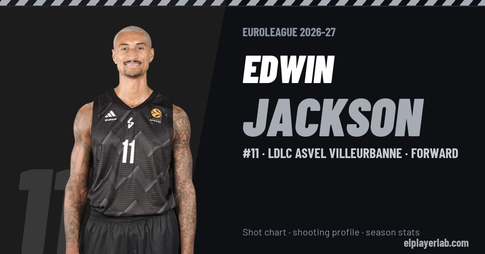

LDLC ASVEL Villeurbanne · Euroleague 2026-27
Edwin Jackson
#11 · Forward · LDLC ASVEL Villeurbanne · 2026-27 · shot chart, shooting profile and season stats

- Number
- 11
- Position
- Forward
- Height
- 190 cm
- Weight
- 92 kg
- Born
- 1989-09-18
- Country
- France
Career
- LDLC ASVEL 2023-2027
- Menorca 2022-2023
- Nanterre 2022
- Estudiantes 2020-2022
- Estudiantes (loan) 2020
- ASVEL 2019-2020
- Budućnost 2018-2019
- Barcelona 2018
- Guangdong Southern Tigers 2017-2018
- Estudiantes 2016-2017
- Málaga 2015-2016
- Barcelona 2014-2015
- Rouen (loan) 2009-2010
- Nanterre (loan) 2008-2009
- ASVEL 2007-2014
Euroleague Player Lab: shot charts, shooting profiles and season stats for every player, rebuilt after every game.